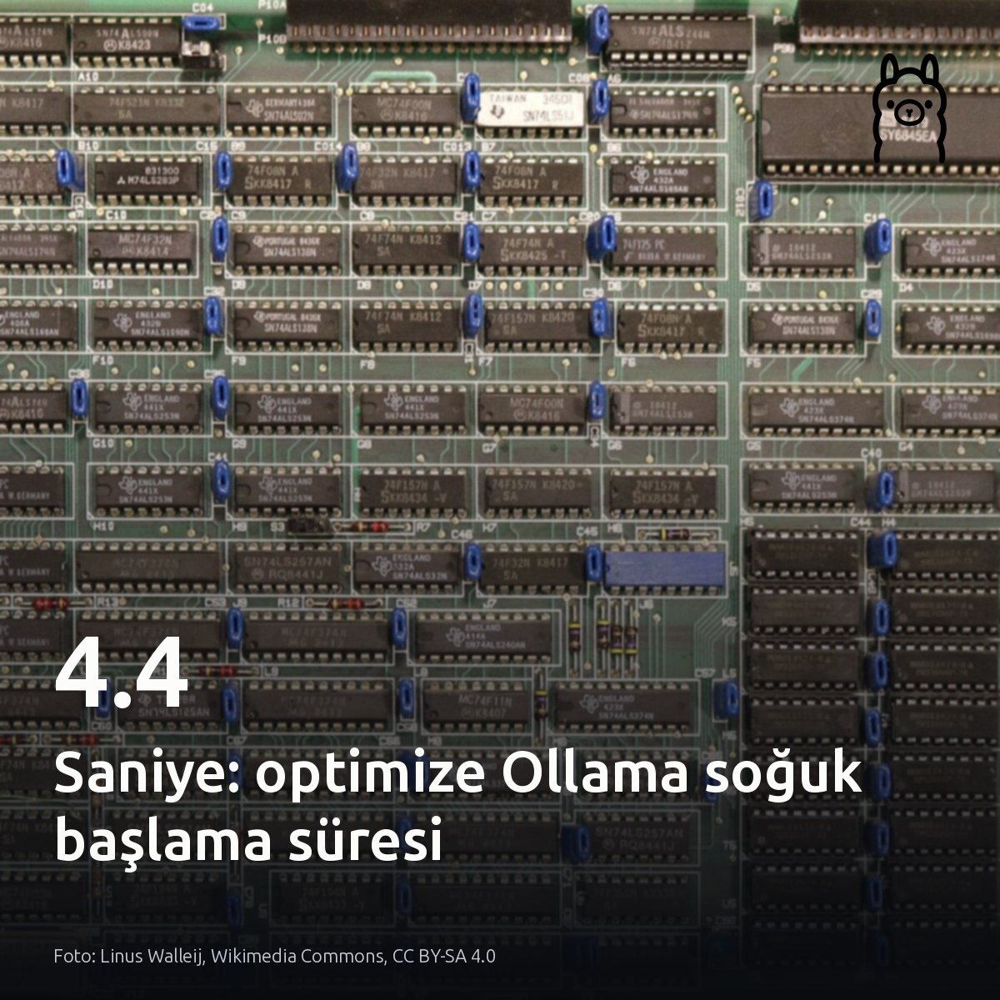
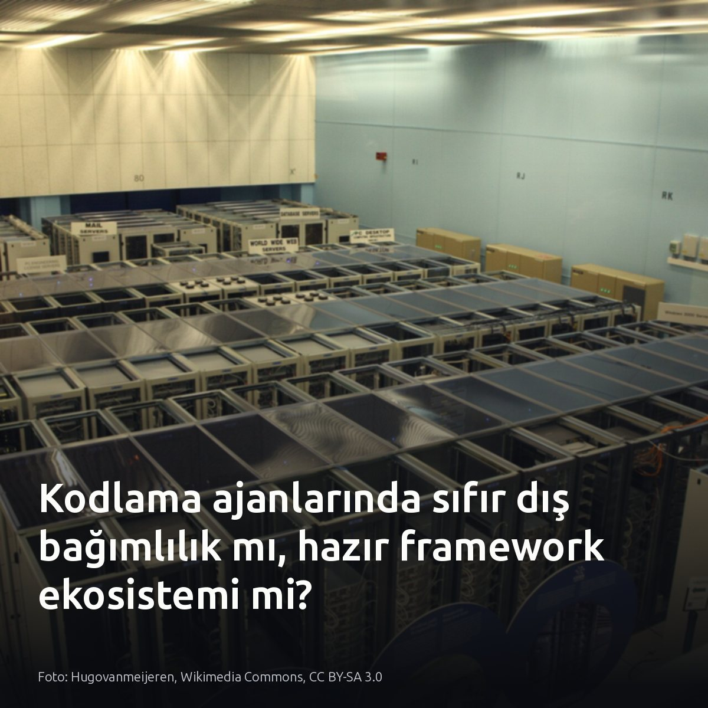
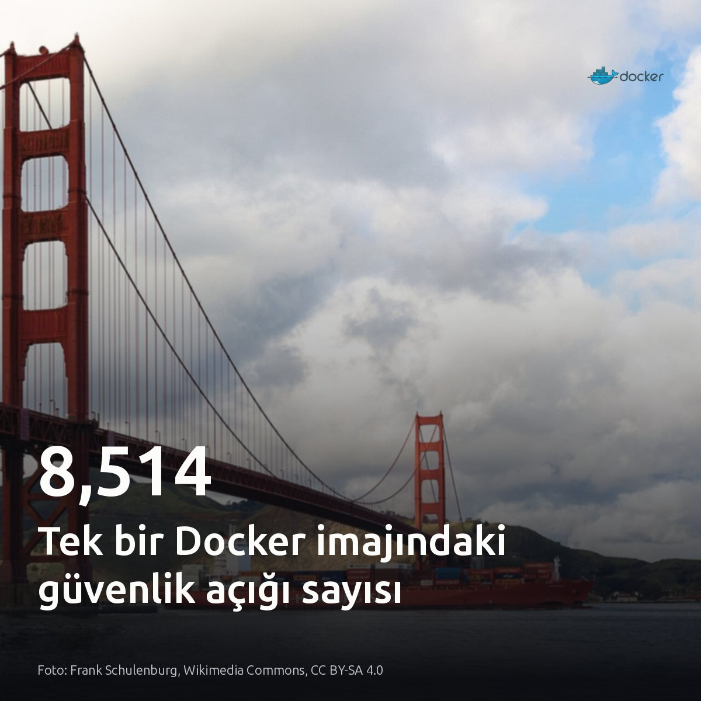
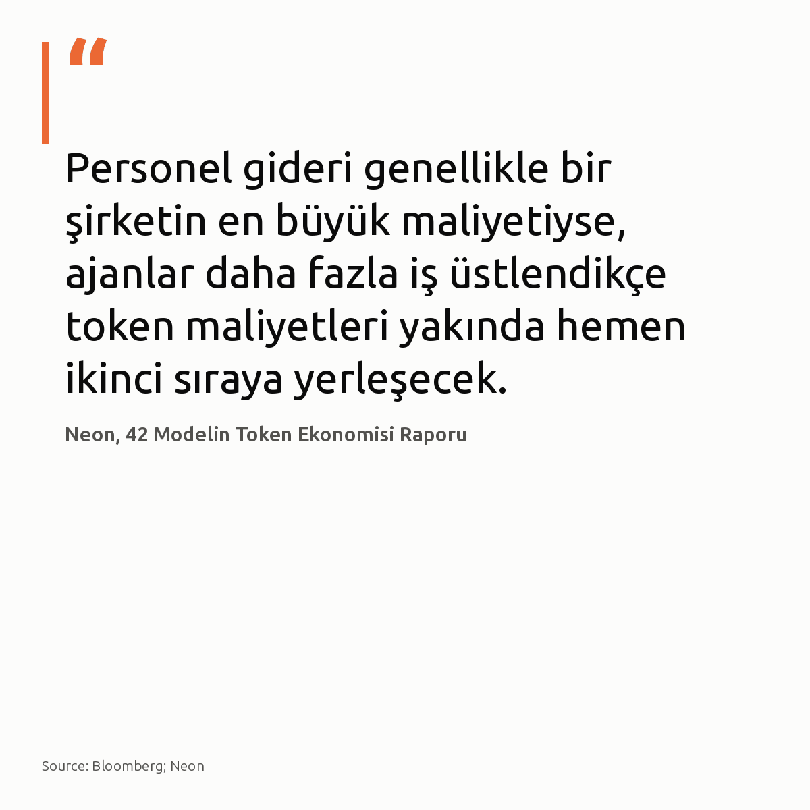
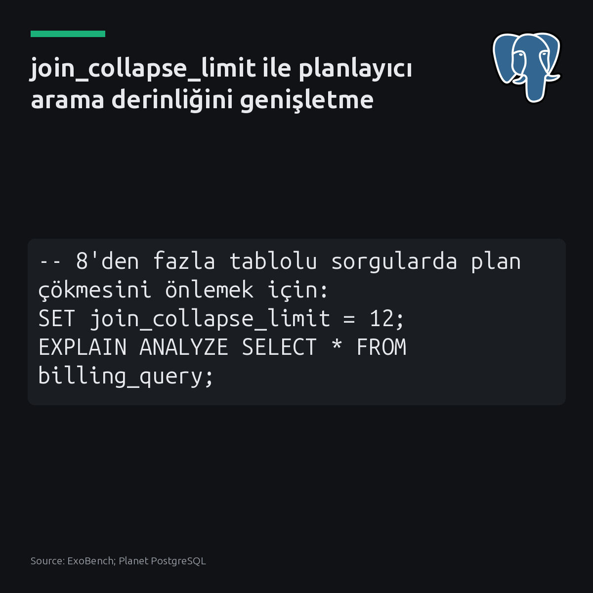

Metni kopyala, kartı indir, LinkedIn'de yapıştır. Bağlantılar gönderiye değil ilk yoruma.

Sunucusuz GPU'da Ollama soğuk başlama süresi 50 saniyeden 4.4 saniyeye indi. En büyük darboğaz, 23 saniye süren model ısınma adımıydı. Ağırlıklar yerel NVMe önbelleğinde. Gereksiz adımları ayıklayıp modeli yerel diskten beslemek, sunucusuz GPU altyapısında açık ağırlıklı modelleri canlı trafiğe açmayı uygulanabilir kılıyor. #ollama #serverlessgpu #llmopsKartı indir
İnceleme ve ölçüm detayları: Runpod Serverless üzerinde Ollama soğuk başlama optimizasyonu [S1-S7]: https://medium.com/@gsuryakumar2to2.5/from-50-seconds-to-4-4-fixing-ollama-cold-starts-on-runpod-serverless-49c7071a2cb5?source=rss------large_language_models-5

Veritabanı sunucusundaki ajanlarda 0 çalışma zamanı bağımlılığı, yüzlerce harici paketten daha az risk taşır. MaskShift bunu Node.js 22 çekirdeğiyle çözüyor. İzole veritabanı betiklerinde tedarik zinciri kırılmalarını önlemek için bağımsız yapılar, çoklu SaaS entegrasyonunda ise hazır kütüphane ekosistemi seçilmeli. Ağ soketi veya HTTP sunucusu barındırmamak saldırı yüzeyini daraltır. Kendi bakım betiklerinizdeki paket ağacına ve soketlere bakın. #postgresql #devops #automationKartı indir
İnceleme bağlantıları ve kaynaklar: Görsel: Hugovanmeijeren, Wikimedia Commons, CC BY-SA 3.0 [S1], [S2], [S3], [S4] MaskShift: https://github.com/nafeeur/MaskShift [S5], [S6] Remembrane: https://github.com/satyasairay/remembrane

Tek bir dikkatsiz temel imaj seçimi, konteynere 8.514 güvenlik açığı ve 200 MB çöp paket doldurabiliyor. Saldırı yüzeyi anında genişliyor. Boru hattında dağıtım süreleri uzadığında, sorun genellikle uygulama kodunda değil, Dockerfile katmanlarında biriken işletim sistemi artıklarında çıkıyor. imgvet gibi açık kaynaklı araçlar bu açıkları ve katman israfını tek raporda topluyor. Ancak distroless veya scratch tabanında çalışan statik ikililerde bu risk geçerli değil. #docker #devops #securityKartı indir
İnceleme ve analiz kaynağı: - Medium / AWS Tip: https://awstip.com/your-docker-image-has-8-514-cves-and-200mb-of-garbage-6a1ab2a10762?source=rss------devops-5

Modeller ucuzladıkça yapay zekâ bedava sanılıyor; oysa otonom ajanlarda token gideri bordroyu yakalamak üzere. Birim maliyet düşüyor. Fakat tekil sorgulardaki tasarruf, kontrolsüz ajan döngülerinin tükettiği token hacminde tamamen eriyor. 500 mühendislik bir operasyonda model tercihi, ayda 188.000 dolarlık ve 86 katlık bir maliyet farkı yaratıyor. Bütçe kotaları ve yerel açık ağırlıklı modeller işletilmedikçe bu altyapı maliyeti sürdürülemez. #aiagents #finops #devopsKartı indir
Kaynaklar: • Görsel verisi: Bloomberg & Neon • Neon raporu: https://neon.com/blog/comparing-token-economics-across-42-ai-models • Bloomberg analizi: https://www.bloomberg.com/news/articles/2026-06-18/ai-costs-what-shift-from-flat-rate-to-token-pricing-model-means-for-industry

Dokuz tablolu sorguya 5 satırlık bir lookup tablosu eklemek, süreyi 0.3 ms'den 467 ms'ye fırlatabiliyor. PostgreSQL, 2005 yılından bu yana join_collapse_limit varsayılanını 8 olarak tutuyor. Sorgudaki tablo sayısı bu sınırı aştığında optimizer olası tüm birleşim permütasyonlarını hesaplamayı aniden durduruyor. Plan hash join'e kilitleniyor. Lookup tablosu olmadan tüm ölçeklerde 0.3 ms süren sorgu, 50.000 satıcıda 467 ms seviyesine çıkıyor. Alexander Ioffe, join_collapse_limit değerini 12 seviyesine çekmenin milisaniye altı nested loop planını geri getirdiğini belgeliyor. Arama derinliğini oturum veya sorgu bazında genişletmek, planlayıcının küçük lookup tabloları yüzünden maliyetli birleşimlere saplanmasını engelliyor. #postgresql #dba #queryoptimizationKartı indir
İncelenen analiz ve test verileri: - Kaynaklar: ExoBench; Planet PostgreSQL - Alexander Ioffe: How One Extra JOIN Reliably Breaks Postgres (https://postgr.es/p/9tP)
{kind=link}
{kind=link}
{kind=link}
{kind=link}
{kind=link}